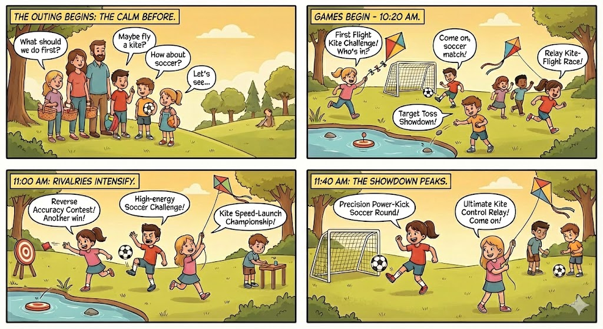
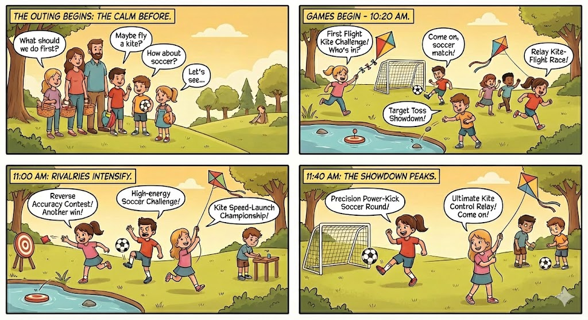

Beyond Self-Interest: Modeling Social-Oriented Motivation
for Human-like Multi-Agent Interactions
2 School of Intelligence Science and Technology, Peking University, Beijing, China.
3 Institute for Artificial Intelligence, Peking University, Beijing, China.
4 Peking University, Beijing, China.
5 Beijing Institute for General Artificial Intelligence (BIGAI), Beijing, China.
Abstract
ASVO (Autonomous Social Value-Oriented agents) is a multi-agent simulation framework that combines Social Value Orientation (SVO) with value-driven LLM agents. Instead of fixed behavior rules, agents maintain structured social desires and update them through context-aware reflection during interaction. This enables adaptive behavior over time, including shifts between cooperation and competition, and supports more realistic, interpretable social simulations.
Method Workflow

ASVO models adaptive social motivation through a structured psychological profile and dynamic SVO adaptation. At each step, agents perform Belief Update, Value Update, SVO Calculation, and Activity Generation, forming a closed feedback loop. This design enables the emergence of human-like cooperation, competition, and personality drift in multi-agent social systems.
Examples
Simulated
 

Simulated


Simulated
Result
| LLM | ReAct | BabyAGI | LLMob | D2A | ASVO | |||||
|---|---|---|---|---|---|---|---|---|---|---|
| N | H | N | H | N | H | N | H | N | H | |
| School | ||||||||||
| Deepseek | 4.004 | 3.667 | 3.438 | 2.771 | 4.500 | 3.708 | 3.292 | 3.083 | 4.750 | 4.792 |
| GPT-5 | 3.750 | 3.417 | 3.833 | 3.521 | 4.354 | 4.271 | 3.812 | 3.448 | 4.958 | 4.958 |
| Gemini-2.5 | 3.833 | 3.896 | 3.479 | 3.042 | 4.312 | 4.062 | 3.427 | 3.083 | 4.708 | 4.708 |
| Qwen3 | 3.917 | 3.521 | 3.458 | 3.188 | 4.271 | 4.021 | 3.677 | 3.406 | 4.792 | 4.824 |
| Avg | 3.876 | 3.625 | 3.552 | 3.130 | 4.359 | 3.938 | 3.552 | 3.255 | 4.802 | 4.821 |
| Std | 1.097 | 0.658 | 1.322 | 0.877 | 0.861 | 0.565 | 1.426 | 1.047 | 0.497 | 0.456 |
| Workplace | ||||||||||
| Deepseek | 3.214 | 2.385 | 2.455 | 2.397 | 3.253 | 2.609 | 2.849 | 2.479 | 4.766 | 4.119 |
| GPT-5 | 3.221 | 3.045 | 3.349 | 3.064 | 4.144 | 3.792 | 3.703 | 3.458 | 4.849 | 4.019 |
| Gemini-2.5 | 3.448 | 3.182 | 2.673 | 2.724 | 3.442 | 3.269 | 2.891 | 2.698 | 4.878 | 4.034 |
| Qwen3 | 3.297 | 2.760 | 2.843 | 2.673 | 3.330 | 3.058 | 3.135 | 2.818 | 4.782 | 4.026 |
| Avg | 3.330 | 2.877 | 2.798 | 2.710 | 3.542 | 3.182 | 3.145 | 2.863 | 4.819 | 4.049 |
| Std | 1.568 | 1.063 | 1.358 | 0.968 | 1.463 | 1.088 | 1.444 | 0.991 | 0.491 | 0.466 |
| Family | ||||||||||
| Deepseek | 3.286 | 3.262 | 2.917 | 2.690 | 3.589 | 3.339 | 4.010 | 3.167 | 4.750 | 3.964 |
| GPT-5 | 3.345 | 3.202 | 3.345 | 3.202 | 4.202 | 3.863 | 4.479 | 3.750 | 4.905 | 4.024 |
| Gemini-2.5 | 3.726 | 3.488 | 3.423 | 1.433 | 3.845 | 3.429 | 4.031 | 3.615 | 4.863 | 4.077 |
| Qwen3 | 4.006 | 3.536 | 3.685 | 3.315 | 4.000 | 3.738 | 4.490 | 3.781 | 4.381 | 3.820 |
| Avg | 3.693 | 3.449 | 3.342 | 3.079 | 3.909 | 3.579 | 4.253 | 3.578 | 4.725 | 3.946 |
| Std | 1.423 | 0.921 | 1.239 | 0.904 | 1.166 | 0.827 | 1.148 | 0.941 | 0.624 | 0.648 |
Across school, workplace, and family settings, ASVO consistently attains the highest average scores and the lowest variance, indicating both stronger overall performance and more stable behavior compared to ReAct, BabyAGI, LLMob, and D2A baselines.

ASVO’s action distribution stays aligned with its configured SVO persona, cooperative under prosocial setups and increasingly competitive as the angle turns individualistic, whereas baselines with identical profiles produce mixed behaviors that stray from their intended orientations.
Citation
@inproceedings{asvo,
author = {Lin, Jingzhe and Zhang, Ceyao and Yang, Yaodong and Wang, Yizhou and Zhu, Song-Chun and Zhong, Fangwei},
title = {Beyond Self-Interest: Modeling Social-Oriented Motivation for Human-like Multi-Agent Interactions},
booktitle = {Proceedings of the 25th International Conference on Autonomous Agents and Multiagent Systems (AAMAS 2026)},
year = {2026},
address = {Paphos, Cyprus},
publisher = {Association for Computing Machinery}
}